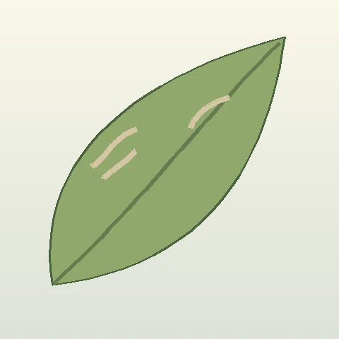

疤痕
没有扩大的浅色斑纹
这是与该表现相符的一种可能原因，请结合下方特征核对。

先看哪里
拍照记录斑纹并对照新长的叶片，看是否仍只出现在旧叶受光或摩擦的一面。
可能原因与下一步
稳定的斑纹可能来自旧伤、日灼或自然斑锦。调整明显的摩擦来源，保留正常叶片。
没有扩大的浅色斑纹
这是与该表现相符的一种可能原因，请结合下方特征核对。

拍照记录斑纹并对照新长的叶片，看是否仍只出现在旧叶受光或摩擦的一面。
稳定的斑纹可能来自旧伤、日灼或自然斑锦。调整明显的摩擦来源，保留正常叶片。